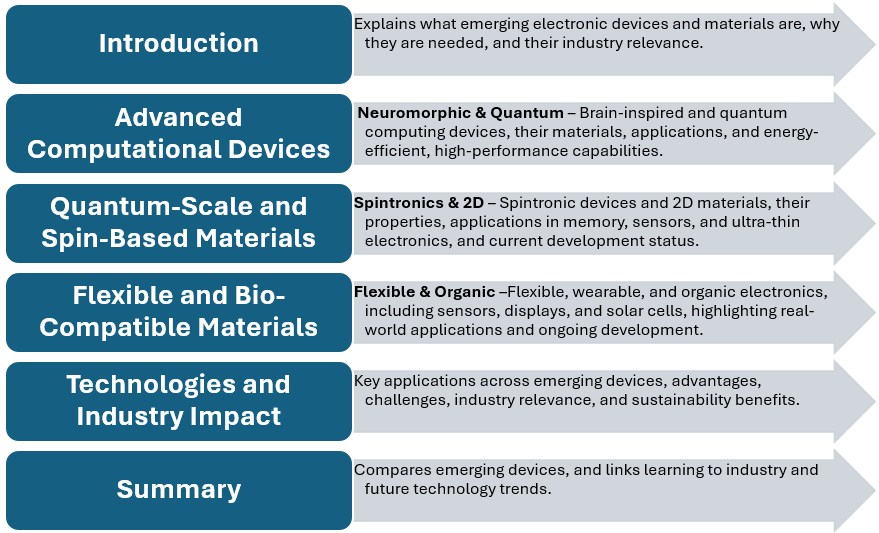
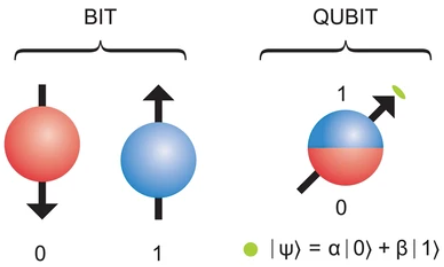
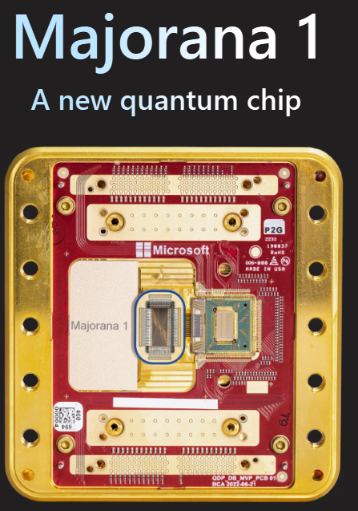
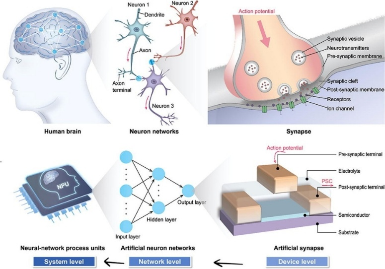
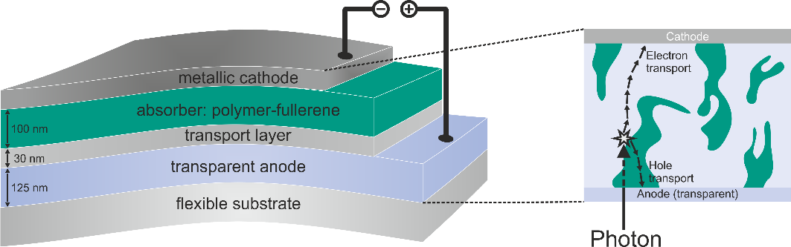
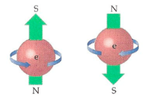
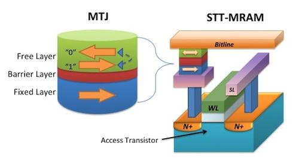
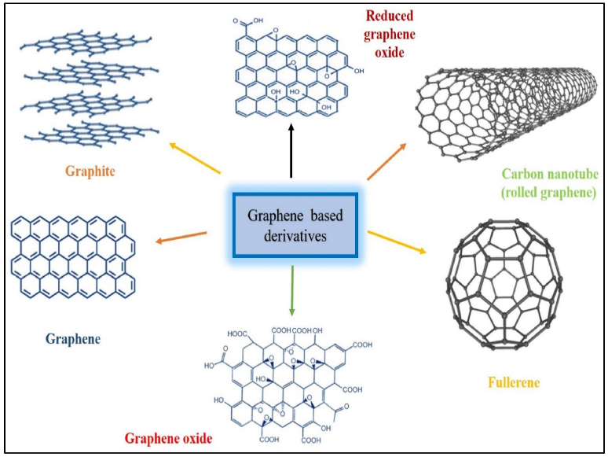
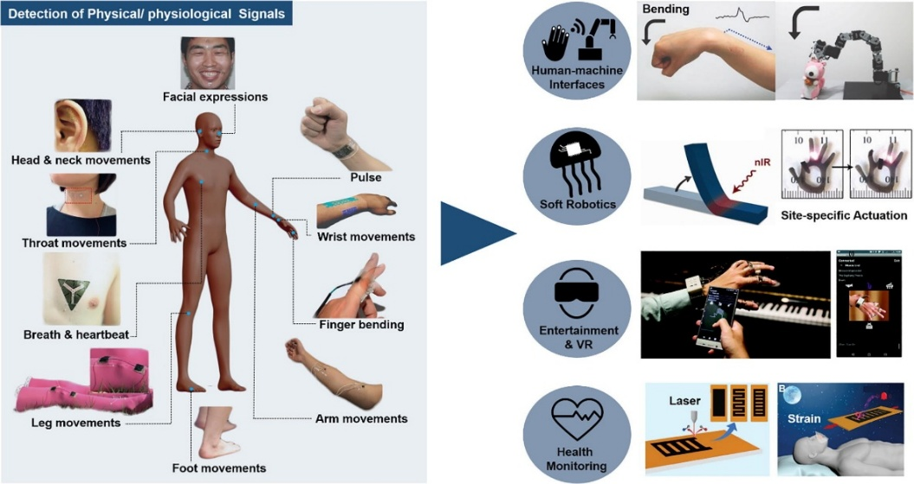

Emerging Electronic Devices and Materials
Unit 2 mini-course. No background needed: every technical word is explained as it appears.

Introduction: what "emerging" means
Almost every electronic device you use today is built on silicon. Silicon is a semiconductor, a material that can be switched between carrying electricity and blocking it. That on/off switching is how chips think and remember.
"Emerging electronic devices and materials" are new materials and devices that go beyond what silicon can do. They may be faster, use less energy, bend, or do jobs silicon cannot do at all. Five examples come up in this course:
- 2D materials such as graphene and MoS₂, layers only a few atoms thick.
- Flexible and organic electronics, such as wearables and foldable screens.
- Neuromorphic devices, chips that work a bit like a brain.
- Quantum devices, which use the rules of quantum physics.
- Spintronic devices, such as MRAM memory and magnetic sensors, which use a property of electrons called spin.
Why explore new materials and devices?
- Silicon has limits
- Silicon devices struggle with speed, power efficiency and shrinking further. As parts get smaller, they suffer from leakage currents (electricity escaping where it should not), heat, and reliability problems.
- Saving energy
- New materials and designs can cut energy use in mobile devices, data centers and renewable energy systems.
- New uses
- Flexible and wearable electronics need materials that bend or stretch. Quantum and neuromorphic devices make advanced computing and AI possible.
- Future needs
- Quantum computing, AI and smart sensors all need materials with unusual electrical or physical properties.
- Careers
- Knowing these materials helps prepare you for work in advanced electronics, microelectronics and the semiconductor industry. It also shows where device technology and sustainability are heading.
Check-in
They are new materials and devices that may be faster, use less energy, bend, or do jobs silicon cannot.
Continue to: Advanced computing: quantum and neuromorphic devices →Advanced computing: quantum and neuromorphic devices
Quantum devices
Quantum devices work using quantum mechanics, the physics of very small things, which behaves differently from everyday objects.
- Qubit. A normal computer bit is either 0 or 1. A qubit can be 0, 1, or both at once. That "both at once" state is called superposition.
- Entanglement. Qubits can be linked so that what happens to one is tied to the other, even when they are far apart. This gives quantum computers special abilities.
- Uses. Cryptography (secret codes), optimization (finding the best solution among very many), and simulating materials.

Where things stand: quantum devices are mostly still experimental. IBM and Google let people use quantum computers over the cloud. Qubits based on Majorana particles are still at the proof-of-concept stage, meaning researchers have shown the idea can work but it is not a finished product.
Microsoft has built a quantum processing unit (QPU) around a topological core, designed to scale to a million qubits on a single chip.

Watch: Quantum Computers Explained – Limits of Human Technology (YouTube)
Watch: Majorana 1: Microsoft's Quantum Computing Breakthrough! (YouTube)
Read: Microsoft Quantum hardware
Key materials. Mostly semiconductors, sometimes with superconductors (materials that carry electricity with no resistance) or topological materials (materials with special surface behavior). These help qubits keep their quantum state and stay entangled.
Why it matters. Quantum computers could speed up optimization, cryptography and scientific simulation, and could cut energy use in large computing systems. For example, simulating materials could help design new medicines or semiconductors.
Neuromorphic devices
"Neuromorphic" means "brain-shaped". These devices copy how the human brain is built and works, using artificial neurons (the brain's nerve cells) and synapses (the connections between them).
- Devices such as memristors can store and process information in the same place, like a biological synapse. Ordinary computers keep memory and processing separate.
- Uses. AI chips, pattern recognition, smart sensors and energy-efficient computing.
Where things stand: commercial prototypes exist, such as Intel Loihi and IBM TrueNorth, for energy-efficient AI.

Watch: Intel Introduces Hala Point, the Most Advanced Neuromorphic System (YouTube)
Key materials. Mostly semiconductors such as silicon and GaAs (gallium arsenide), and sometimes oxides or phase-change materials (materials that switch between two physical states). These create brain-like, adaptive behavior.
Why it matters. They allow energy-efficient AI "at the edge", meaning in the device itself, such as a smart camera or wearable. They can learn and adapt, so less work needs to be sent to distant computers. For example, they can recognize patterns in smart sensors and health monitors.
How do they compare with traditional silicon?
| Feature | Traditional silicon | Quantum / neuromorphic |
|---|---|---|
| Information unit | Bit (0 or 1) | Qubit, or neuron/synapse |
| Power usage | Moderate | Very low (neuromorphic) |
| Uses | General computing | Specialized tasks: AI, quantum simulation |
| Flexibility | Rigid | Can include flexible or adaptive systems |
Check-in
A normal bit is 0 or 1. A qubit can also be in superposition: 0 and 1 at the same time.
Continue to: Flexible and bio-compatible electronics →Flexible and bio-compatible electronics
Silicon devices are rigid and brittle, which limits their use in wearables, foldable screens and bendable sensors. Flexible and organic electronics use conducting polymers (plastics that carry electricity), organic semiconductors and thin-film materials. Devices made from them can bend, stretch, or be printed onto flexible surfaces.
Key materials
- Organic semiconductors
- Carbon-based materials that conduct electricity. They can be made at low temperatures and printed on flexible surfaces. Examples: OLED displays and organic solar cells.
- Flexible substrates
- A substrate is the base layer a device is built on. Here it can be plastic, polymer film or even paper, so electronics can follow curves or fit on the body.
- 2D materials for flexibility
- Graphene or MoS₂ can be made into ultra-thin, strong, bendable layers that still conduct well and perform well.

Applications
- Wearables: fitness trackers, smart watches, health monitors.
- Flexible displays: foldable smartphones, rollable TVs.
- Flexible solar cells: lightweight, portable energy.
- Flexible sensors: pressure, temperature or chemical sensors for medical or industrial use.
Where things stand: many of these are already on sale, including wearables, foldable displays and flexible sensors. Flexible solar cells and advanced medical sensors are still emerging, with work continuing to improve how long they last.
How do they compare with silicon?
| Feature | Silicon | Flexible / organic |
|---|---|---|
| Rigidity | Rigid | Flexible, bendable |
| Making it | High-temperature fabrication | Low-temperature, printable |
| Uses | Conventional electronics | Wearables, foldables, sensors |
| Durability | High, but rigid | Moderate; may need encapsulation (a protective coating) |
Why it matters. These devices fit into daily life. Printable, flexible devices can use less material and less energy to make, which supports sustainability. They also open new markets: wearable healthcare devices, portable solar cells and foldable consumer electronics.
Check-in
Organic semiconductors are carbon-based and can be made at low temperatures, so they can be printed on plastic, film or paper.
Continue to: Spintronics and 2D materials →Quantum-scale and spin-based materials: spintronics and 2D
Traditional electronics store and process information using the charge of electrons. Spintronics also uses the electron's spin. 2D materials, such as graphene and MoS₂, are ultra-thin layers only a few atoms thick. They conduct well, bend, and use little energy. Together, they can make devices that are faster, smaller and more energy efficient.
Spintronics
Electrons have a property called spin, which can be "up" or "down". You can think of it as a tiny arrow pointing one way or the other. Spin can stand for information, just as 0 and 1 do in traditional electronics. Devices that use spin need less energy and can keep their information even when the power is off. This is called non-volatile memory.

Watch: What is spintronics and how is it useful? (YouTube)
Applications
- MRAM (Magnetoresistive Random Access Memory): fast, energy-efficient memory. It is on sale now, but only in niche uses.
- Spin-based logic devices: could allow low-power computing. Mostly experimental so far.
- Sensors: magnetic sensors in hard drives, cars and medical imaging. Widely used already.

Advantages and limits
- Uses less energy than traditional devices.
- Can combine memory and logic in one device, which speeds up computing.
- Non-volatile, so it keeps data without power and wastes less energy.
- Limits: complex manufacturing, and still at an early research stage for large-scale commercial use.
2D materials
- Graphene
- A single layer of carbon atoms arranged in a honeycomb (hexagon) pattern. It is an outstanding conductor of electricity, very strong and flexible. Possible uses: high-speed transistors, flexible electronics and sensors.
- Transition metal dichalcogenides (TMDs), for example MoS₂
- Semiconducting 2D materials with a bandgap, which is what lets them switch on and off. That makes them suitable for transistors. They are ultra-thin and light, and can be stacked into multi-layer devices.
- Other 2D materials
- Examples: h-BN (an insulator) and phosphorene (a semiconductor). Different layers can be combined into heterostructures, stacks with tailored properties.

Watch: Graphene: A Double-Edged Sword (3 minutes, YouTube)
Applications
- High-performance transistors and circuits: mostly experimental, with research prototypes showing promise.
- Flexible, wearable, ultra-thin sensors: some early products and research prototypes.
- Energy-efficient photodetectors and solar cells: still emerging, with limited commercial use so far, mainly in research and specialized devices.

How do they compare with silicon?
| Feature | Silicon | Spintronics / 2D materials |
|---|---|---|
| How it works | Electron charge | Electron spin and/or ultra-thin 2D layers |
| Power efficiency | Moderate | Very low power for memory and logic |
| Device size | Limited by how far it can shrink | Atomic-level thickness possible |
| Uses | Conventional electronics | Non-volatile memory, flexible electronics, sensors |
Why it matters. Spintronics and 2D materials allow smaller, faster, more energy-efficient devices that draw less power. Ultra-thin, flexible 2D materials can use less material and support greener manufacturing. They matter for next-generation computing, wearables and green technology.
Check-in
Spin-based memory holds information without power, which also reduces wasted energy.
Continue to: AI and semiconductors →AI and semiconductors
Artificial intelligence (AI) and chips help each other. AI programs need chips that are faster and use less energy. And AI is used to improve how chips are designed, made and tested. This loop speeds up innovation and drives specialized devices that go beyond traditional silicon.
Three kinds of AI-driven chips
1. AI accelerators
Specialized chips built to run AI work efficiently. Examples: GPUs (graphics processing units), TPUs (tensor processing units) and custom AI accelerators. They do many calculations in parallel (at the same time), handle neural-network work at high speed, and use less energy. Status: widely used in cloud computing, data centers and high-performance AI.
2. Neuromorphic AI chips
Brain-inspired chips with artificial neurons and synapses. Intel Loihi and IBM TrueNorth learn and make decisions locally, using very little power. They are energy efficient for edge AI and can adapt in real time. Status: commercial prototypes exist, mainly for research and specialized AI.
3. Edge AI devices
AI that runs directly on a device such as a smartphone, a smart gadget (IoT) or a wearable. This sends less data to the cloud, responds faster and improves privacy. Status: increasingly common in consumer electronics and industrial sensors.
Materials and hardware
- Semiconductors: silicon is still dominant. Specialized AI chips also use GaAs, SiC (silicon carbide) or advanced FinFET designs (a three-dimensional transistor shape).
- Neuromorphic devices: oxides, phase-change materials and memristors, to copy how synapses work.
- AI accelerators: standard CMOS (the common chip-making technology) for GPUs and TPUs, with research into low-power designs made for AI.
- Flexible AI hardware: organic and 2D materials may allow AI on wearable or bendable devices.
Where AI chips are used
- Data centers and cloud AI: accelerators use less energy per calculation when training large neural networks.
- Consumer electronics: smartphones, smart cameras and personal assistants use AI chips for vision, speech and gesture recognition.
- Industrial automation: robots, self-driving vehicles and smart factories use AI-driven sensors and processors.
- Healthcare and wearables: AI chips analyze body data in real time.
Advantages and challenges
Advantages: energy-efficient computing and lower running costs; faster decisions through local processing at the edge; self-learning systems and predictive analytics; and support for next-generation devices such as neuromorphic processors and adaptive sensors.
Challenges: advanced AI hardware can be costly and complex to make. Many neuromorphic and edge AI devices are still early in commercialization. Managing heat and power is critical in high-performance AI chips. New chip materials, such as 2D layers and phase-change materials, may need careful handling.
Industry and sustainability
- Careers: AI hardware, microelectronics and semiconductor manufacturing. Understanding AI-enabled chips helps you follow trends in computing, edge devices and smart sensors.
- Less energy in big computing: AI accelerators reduce energy use in tasks such as data centers.
- Less waste in factories: AI-driven manufacturing and yield optimization (getting more good chips from each batch) reduce waste and energy use in chip factories ("fabs").
- Less data travel: edge AI relies less on the cloud, cutting the energy used to send data.
- Greener wearables: AI-compatible flexible electronics support low-resource, wearable and environmentally friendly uses.
Check-in
Processing on the device itself means less data travels to the cloud, so responses are faster and more private.
Continue to: Summary →Summary
- Traditional silicon devices are powerful but limited in speed, flexibility and energy efficiency.
- Emerging technology includes quantum devices, neuromorphic devices, flexible/organic electronics, spintronics and 2D materials.
- These technologies offer new uses, better performance and sustainability benefits.
- Understanding them prepares you to engage with next-generation electronics in industry and research.
| Feature | Traditional silicon | Quantum devices | Neuromorphic devices | Flexible / organic electronics | Spintronics / 2D materials |
|---|---|---|---|---|---|
| Information unit | Bit (0 or 1) | Qubit (0, 1, superposition) | Artificial neuron/synapse | Bit (0 or 1) | Electron charge + spin |
| Form | Rigid | Conventional or lab setups | Can be built into chips | Flexible, bendable, printable | Ultra-thin, flexible layers |
| Energy efficiency | Moderate | High potential for specific tasks | Very high for AI / edge computing | Moderate to high | Very high, non-volatile memory |
| Key uses | General computing | Quantum simulations, cryptography | AI, pattern recognition, smart sensors | Wearables, foldable displays, flexible sensors | MRAM, high-speed transistors, advanced sensors |
| Advantages | Mature, reliable, scalable | Potential for extremely fast computation | Energy-efficient learning and adaptation | Flexible, portable, low material use | Non-volatile, ultra-thin, fast, energy efficient |
| Limits | Power use, hard to shrink further | Experimental, costly, complex | Early stage, complex to make | Slower, shorter lifespan, sensitive to moisture | Hard to make, early commercialization |
Check-in
Spintronics uses spin, the up or down property of electrons, in addition to their charge.
Continue to: Final quiz →Final quiz
Test what you have learned with a quiz on Kahoot. It opens in a new tab.